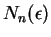
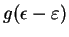
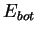
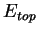

The calculation of the total/local/projected DOS is performed using
the method of tetrahedra. In this method the whole Brillouin zone
(BZ) is split into tetrahedra, the energies
 at the vertices of which are to be calculated by the DFT code. These
energies are collected in a file band.out (Sections 4
- 6) and then (together with the information
contained in the file brill.dat written by tetr)
are used by lev00 to calculate the DOS.
at the vertices of which are to be calculated by the DFT code. These
energies are collected in a file band.out (Sections 4
- 6) and then (together with the information
contained in the file brill.dat written by tetr)
are used by lev00 to calculate the DOS.
Calculation of the volume integrals in the reciprocal space in Eqs. (3.4), (3.5) is done analytically in the method of tetrahedra. It is also possible to do a smearing (convolution) of your original (raw) DOS curves for every band,

, by calculating instead the integral
is a Gaussian function with some dispersion
and
define the ``raw'' boundaries for each physical band and the factor